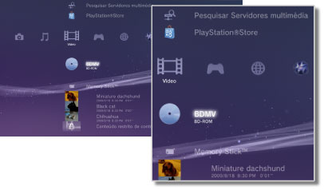

Vídeo > Categoria de Vídeo
Categoria de Vídeo
Os ícones seguintes são apresentados no menu  (Vídeo). Os ícones apresentados variam consoante as condições de utilização.
(Vídeo). Os ícones apresentados variam consoante as condições de utilização.

 |
Utilitário de Dados BD | Os dados administrativos utilizados pelos Blu-ray Discs (BD) são guardados. |
|---|---|---|
 |
Pesquisar Servidores multimédia | Inicie uma procura por Servidores Multimédia DLNA que estão ligados na mesma rede. |
 |
Servidor multimédia | Ligue aos Servidores Multimédia DLNA e reproduza os ficheiros de vídeo aí guardados. O ícone apresentado varia dependendo do tipo de servidor. |
 |
PlayStation®Store | Visualizar informações da PlayStation®Store. Este ícone só é apresentado em países ou regiões onde a loja de vídeo PlayStation®Store esteja disponível. |
 |
BD-ROM / BD-R / BD-RE | Reproduz um Disco Blu-ray (BD). |
 |
DVD-ROM / DVD-R / DVD+R / DVD-RW / DVD+RW | Reproduzir um Disco DVD ou AVCHD. |
 |
Disco de Dados | Reproduza ficheiros de vídeo guardados num suporte de disco gravável e compatível, como um CD-R ou DVD-R. |
 |
Memory Stick™ | Reproduz ficheiros de vídeo guardados em suportes Memory Stick™.* |
 |
SD Memory Card | Reproduz ficheiros de vídeo guardados num SD Memory Card.* |
 |
CompactFlash® | Reproduz ficheiros de vídeo guardados em CompactFlash®.* |
 |
PSP™ (PlayStation®Portable) | Reproduz ficheiros de vídeo guardados num suporte Memory Stick™ de um sistema PSP™. |
 |
PSP™ (PlayStation®Portable) | Reproduz ficheiros de vídeo guardados na memória do sistema PSP™go. |
 |
Câmara Digital | Reproduz ficheiros de vídeo guardados numa câmara digital compatível com o sistema PS3™. |
 |
WALKMAN®/ATRAC Audio Device (WALKMAN®) | Reproduzir ficheiros de vídeo num WALKMAN®/ATRAC Audio Device (WALKMAN®). |
 |
ATRAC Audio Device | Reproduzir ficheiros de vídeo guardados num ATRAC Audio Device. |
 |
Dispositivo USB | Reproduz ficheiros de vídeo guardados num dispositivo de armazenamento de massa USB. |
 |
Filmes de Câmara Digital | Reproduz ficheiros de vídeo guardados na pasta DCIM do suporte de armazenamento. |
|
(pasta) | Este ícone é apresentado para pastas que tenham sido criadas no suporte de armazenamento utilizando um PC. |
 |
(ficheiros guardados no disco rígido) | Reproduz ficheiros de vídeo guardados no disco rígido do sistema PS3™. São apresentadas imagens em miniatura. |
 |
(dados transferidos para o disco rígido) | Este ícone é apresentado para ficheiros de vídeo transferidos para o disco rígido. Quando iniciado, os dados são instalados e o ficheiro de vídeo pode ser reproduzido. |
| * |
Em alguns modelos é necessário um adaptador USB apropriado (não incluído) para usar suportes de armazenamento. Quando utilizados com um adaptador USB, os suportes de armazenamento serão apresentados como |
|---|
 (Dispositivo USB).
(Dispositivo USB).Notas
- Para mais informações sobre a norma DLNA, consulte
 (Definições) >
(Definições) >  (Definições de Rede) > [Conexão de Servidor multimédia] neste manual.
(Definições de Rede) > [Conexão de Servidor multimédia] neste manual. - Para o sistema reproduzir discos Blu-ray com protecção de direitos de autor a uma resolução de 1080p, é necessário utilizar um cabo HDMI para ligar o sistema a um dispositivo compatível com a norma HDCP (High-bandwidth Digital Content Protection).
- As imagens de miniatura não podem ser apresentadas para alguns tipos de ficheiros de vídeo protegidos por direitos de autor.
- Quando reproduz um BD de conteúdo com restrições de controlo paternal, a reprodução será limitada de acordo com o nível de controlo paternal definido no sistema PS3™. O nível de controlo paternal do BD pode ser ajustado em (Definições) >
 (Definições de Segurança).
(Definições de Segurança). - Quando reproduz um DVD de conteúdo com restrições de controlo paternal, pode ser necessária uma palavra-passe para reproduzir o conteúdo. A palavra-passe pode ser definida em (Definições) > (Definições de Segurança).
- Os conteúdos com restrições de controlo parental são apresentados como
 . Pode activar a reprodução desse tipo de conteúdos introduzindo uma palavra-passe de 4 dígitos. A palavra-passe pode ser definida ou alterada em (Definições) > (Definições de Segurança).
. Pode activar a reprodução desse tipo de conteúdos introduzindo uma palavra-passe de 4 dígitos. A palavra-passe pode ser definida ou alterada em (Definições) > (Definições de Segurança). - Os BDs bloqueados são apresentados como
 . Para reproduzir o conteúdo desses discos, introduza a palavra-passe definida pelo criador do disco.
. Para reproduzir o conteúdo desses discos, introduza a palavra-passe definida pelo criador do disco. - O conteúdo de aluguer transferido da Loja de vídeo da PlayStation®Store é apresentado como
 .
. - Em raras ocasiões, os discos e outros suportes podem não funcionar correctamente quando reproduzidos no sistema PS3™. Isto deve-se principalmente às variações do processo de fabrico ou da codificação do software.
- Se um dispositivo que não é compatível com o padrão HDCP (High-bandwidth Digital Content Protection) estiver ligado ao sistema através de um cabo HDMI, o sistema não será capaz de emitir conteúdo vídeo e/ou áudio.
Armazenamento Local de Blu-ray Disc (BD)
Se, durante a reprodução de um BD, for apresentada uma mensagem de erro a indicar que o espaço de Armazenamento Local não é suficiente, elimine os ficheiros desnecessários do disco rígido para aumentar a quantidade de espaço livre.
O Armazenamento Local é uma área de armazenamento de dados que é definida nas normas 1.1 / 2.0 de perfil de BD-ROM. Estes dados são armazenados no disco rígido do sistema PS3™.